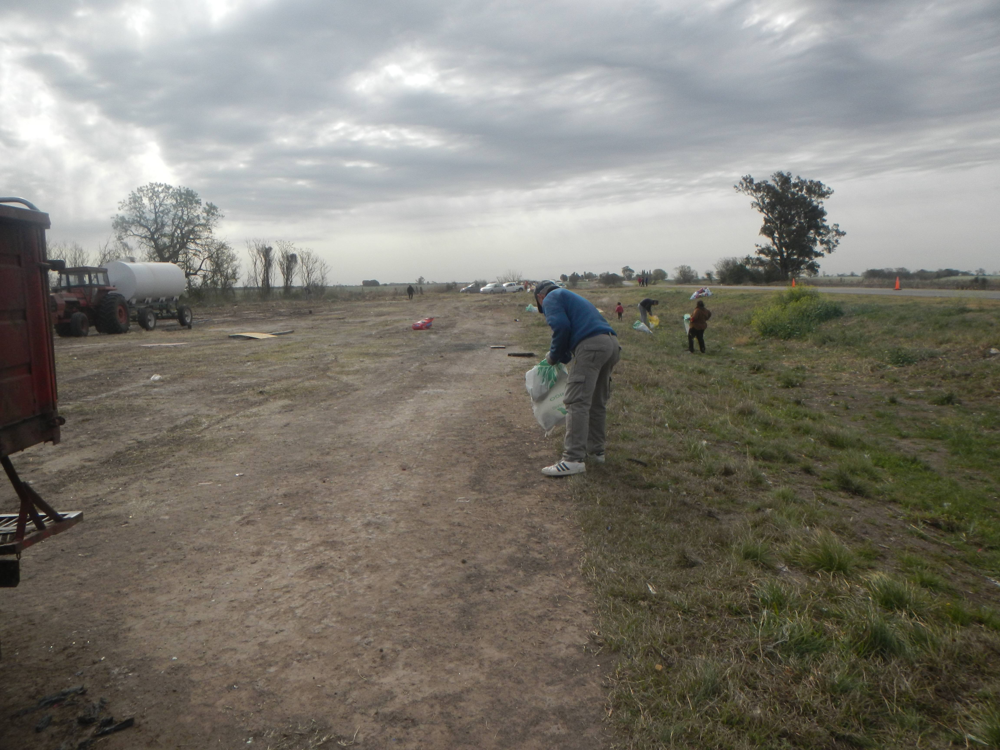

Proyectos


Cirilo
Canal Norte Rafaela
Colonia Rivadavia
Esperanza
Puente Cirilo
Puente Flesia
Objetivos
Mejora de la calidad del agua en los ríos y cuerpos de agua afectados por la contaminación, mediante la reducción de la cantidad de desechos y sustancias tóxicas presentes.
Educar y sensibilizar al p煤blico sobre la importancia de la conservación de los recursos hídricos y la responsabilidad individual en la generación de desechos y la contaminación
Restaurar los ecosistemas acu谩ticos degradados mediante la eliminación de desechos
A
A
Puedes contactarnos a traves de nuestras redes sociales: